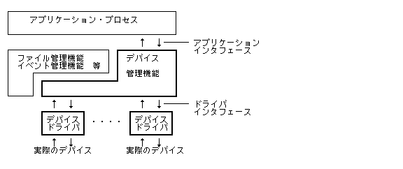
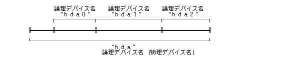
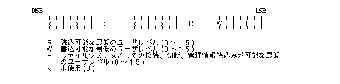

Пристрій (Device)管理機能 , додаток 各種 Пристрій (Device) 統一的 取り扱うため インタフェース機能, および各種 Пристрій (Device) 対応したПристрій (Device)ドライバ 登録／管理機能, Пристрій (Device)ドライバ та インタフェース機能 提供している. ここ , додатокインタフェース み ついて記述する.
また, OS 核 Файл (File)管理機能 та Подія (Event)管理機能 , 内部的 Пристрій (Device)管理機能 経由して実際 Пристрій (Device)操作 行なうこ та なる.
以下 Пристрій (Device)管理機能 位置付け 示す.

使用されるПристрій (Device) та して 以下 ような також ある.
これら Пристрій (Device) うち, Растрове зображення (Bitmap)ディスプレイ 対するдодатокインタフェース , Пристрій (Device)管理機能 та 独立したディスプレイ関数群 та して提供される.
これら ディスプレイ関数群 通常ドライバ та 一体 та なっているためドライバインタフェース також 適用されないこ та なり, Пристрій (Device)管理機能 та 基本的 独立した存在 та なる.
また, Клавіатура (Keyboard) та ポインティングПристрій (Device) 対するдодатокインタフェース Подія (Event)管理機能 та して提供される , ドライバ та インタフェース Пристрій (Device)管理 サポートしている.
各種 ディスク装置 場合 , 通常 Файл (File) та して使用される , Пристрій (Device) та して直接取り扱うため додатокインタフェース також 用意される.
Пристрій (Device) 文字型Пристрій (Device) та ブロック型Пристрій (Device) 2 種類 分類される. 文字型Пристрій (Device) 基本的 バイト単位 データ 入出力 シーケンシャル 行なう також , ブロックПристрій (Device) Пристрій (Device)毎 定められた大きさ データブロック単位 入出力 行なう також ブロック単位 ランダムなアクセス 可能 ある.
各種 ディスク装置 ブロック型Пристрій (Device) あり, そ 他 ほ та んど Пристрій (Device) 文字型Пристрій (Device) та なる.
また, Пристрій (Device) 実Пристрій (Device) та 仮想Пристрій (Device) 分類される. 実Пристрій (Device) 物理的 実際 存在する通常 意味 Пристрій (Device) あり, 仮想Пристрій (Device) ある種 資源 仮想的 1 つ Пристрій (Device) та して取り扱う також ある. 仮想Пристрій (Device) 代Табл. 的な також та して 画面上 1 つ Вікно (Window) 仮想的 1つ コンソール та して取り扱う仮想コンソール あげられる.
Пристрій (Device) , 論理Пристрій (Device)名 та 呼ばれるユニークな文字列 よりСистема (System) 登録され, 識別される. 論理Пристрій (Device)名 , 基本的 以下 示す 3 つ 要素から構成される.
種別 + ユニット , 特 ユニット名 та 呼び, OS 識別される単位 та なる. OS 側 種別 та ユニット 区別 認識せず, 両方 合わせた名称 あるユニット名 より, Пристрій (Device) 識別する. ユニット名 最後 文字 数字 あって いけない.
論理Пристрій (Device)名 , «ユニット名＋サブユニット番号» Табл. わされ, 全体 та して最大 8 文字 ( 16 バイト ) 文字列 та なる. サブユニット番号 前 0 付かない 3 桁ま 数字 ある. サブユニット 存在しない場合, ユニット名 そ まま論理Пристрій (Device)名 та 成り得る. 論理Пристрій (Device)名 最後 文字 数字 ある場合 , そ 論理Пристрій (Device)名 サブユニット Табл. わしている також та 見なされる. サブユニット全体 Табл. わす場合, サブユニット番号 付けず, ユニット名そ також 論理Пристрій (Device)名 та なる.
サブユニット ( パーティション ) Табл. わすため 最大 3 桁 数字 ( サブユニット番号 ) 使用される , サブユニット 分割 無視した 1 つ ユニット та して取り扱う場合 , サブユニット番号 含めない論理Пристрій (Device)名 ( ユニット名 ) 使用する. これ , 主 サブユニット 分割 (即ち, ディスク パーティショニング ) 行なうため 使用される. なお, サブユニット番号 含まない論理Пристрій (Device)名 ( ユニット名 ) 特 物理Пристрій (Device)名 та 呼ぶ.

Пристрій (Device) 登録 , 実際 対応するПристрій (Device)ドライバ 登録 意味し, Пристрій (Device)ドライバ ユニット単位 ユニット名 より定義される. 即ち, 1 つ ユニット 含まれるすべて サブユニット 1 つ Пристрій (Device)ドライバ 処理される. 通常, Пристрій (Device)ドライバ Пристрій (Device) 種別 対応して用意され, 1 つ Пристрій (Device)ドライバ 複数 ユニット 処理する場合 多い , 複数 ユニット 複数 Пристрій (Device)ドライバ 処理して також よい.
なお, 今後単 Пристрій (Device)名 та 言った場合 , 論理Пристрій (Device)名 意味する також та する.
ディスク等 Пристрій (Device) , Система (System) 安全性 保つため , そ Пристрій (Device) 使用 きるユーザ 制限するこ та 望ましい. こ ため, Процес (Process) ユーザレベル よるПристрій (Device) アクセス制御 行なわれる.
各Пристрій (Device) 以下 示す 1 ワード アクセスРежим (Mode) 保持されており, これ よりПристрій (Device) アクセス権 チェックされる ( これ Файл (File) 於ける一般アクセスレベル 相当する також ある ).

即ち, 読込可能なユーザレベル 持つПроцес (Process)から みПристрій (Device) 読込用
( D_READ) オープン 可能 ,
書込可能なユーザレベル 持つПроцес (Process)から みПристрій (Device) 書込用
( D_WRITE ) オープン 可能 та なる.
また, アクセス可能なユーザレベル 持つПроцес (Process)から み,
そ Пристрій (Device) Файл (File)Система (System) та して取り扱うこ та 可能 あり,
Файл (File)Система (System) 接続 / 切断 /
管理情報読込み Файл (File)管理 Системні виклики 実行 きる.
Пристрій (Device) アクセスРежим (Mode) , Пристрій (Device) 登録時 R = W = F = 15 設定される. 登録後 ユーザレベル 0 Процес (Process)から み変更可能 та なる.
#define D_READ 0x0001 /* 読み込み専用オープン */ #define D_WRITE 0x0002 /* 書き込み専用オープン */ #define D_UPDATE 0x0003 /* 更新用オープン */ #define D_EXCL 0x0100 /* 排他Режим (Mode)指定 */ #define D_WEXCL 0x0200 /* 排他書き込みРежим (Mode)指定 */ #define D_NOWAIT 0x8000 /* 待ちなしРежим (Mode)指定 */
typedef struct dev_state {
UW attr; /* Пристрій (Device) 属性 */
UW mode; /* アクセスРежим (Mode) */
W blksz; /* 物理ブロックРозмір (Size)( -1 :不明) */
W wprt; /* 書き込み可否( 0:許可 1:禁止 -1:不明) */
} DEV_STATE;
#define L_DEVNM 8 /* Пристрій (Device)名 長さ */
typedef struct {
UW attr; /* Пристрій (Device) 属性 */
W nsub; /* サブユニット数 */
TC name[L_DEVNM]; /* ユニット名 */
} DEV_INFO;
#define DA_DEVINFO 0xFFFF0000 /* Пристрій (Device)/メディア依存情報 */ #define DA_CHARDEV 0x8000 /* 文字型Пристрій (Device) */ #define DA_REMOVABLE 0x4000 /* 取り外し可能 */ #define DA_DEVKIND 0xFF /* Пристрій (Device)/メディア種別 */ #define DA_DEVTYPE 0xF0 /* Пристрій (Device)/メディアТип (Type)マスク */ #define DK_UNDEF 0x00 /* 未定義/不明 */ #define DK_DISK 0x10 /* ディスクТип (Type) */ #define DK_DISK_UNDEF 0x10 /* そ 他 ディスク */ #define DK_DISK_RAM 0x11 /* RAM ディスク */ #define DK_DISK_ROM 0x12 /* ROM ディスク */ #define DK_DISK_FLA 0x13 /* FLASH ROM / SS ディスク */ #define DK_DISK_FD 0x14 /* フロッピーディスク */ #define DK_DISK_HD 0x15 /* ハードディスク */ #define DK_DISK_CDROM 0x16 /* CD-ROM */
#define D_SUSPEND 0x0001 /* サスペンドする */ #define D_DISSUS 0x0002 /* サスペンド 禁止する */ #define D_ENASUS 0x0003 /* サスペンド 許可する */ #define D_CHECK 0x0004 /* サスペンド禁止カウント 調べる */ #define D_FORCE 0x8000 /* 強制サスペンド指定 */
|
WERR opn_dev(TC* dev, W o_mode, W* error)
TC* dev 対象Пристрій (Device)名
W o_mode オープンРежим (Mode)
( D_READ ‖ D_WRITE ‖ D_UPDATE ) | [ D_EXCL ‖ D_WEXCL ]
| [ D_NOWAIT ]
D_READ 読み込み用オープン(Rアクセス権 必要)
D_WRITE 書き込み用オープン(Wアクセス権 必要)
D_UPDATE 更新(読み込み／書き込み)用オープン(RWアクセス権 必要)
D_EXCL 排他Режим (Mode)
D_WEXCL 排他書き込みРежим (Mode)
D_NOWAIT 待ち無し指定
文字型Пристрій (Device) 場合, オープン時 Пристрій (Device) レディ状態 なる
ま 待たず リターンする. こ 指定 オープンした場合 ,
rea_dev(), wri_dev() 入力データ 得られなかったり, 出力
ビジー状態 場合 , 待たず リターンする.
W* error 詳細エラー情報格納領域
*error , Пристрій (Device)ドライバから戻されたエラー情報 設定される.
エラー情報 内容 , 各Пристрій (Device)ドライバ よって異なる.
error NULL 場合, エラー情報 格納しない.
＞0 正常(Пристрій (Device)ディスクリプタ) ＜0 Коди помилок
ER_ACCES : Пристрій (Device)(dev) アクセス権(R,W) ない.
ER_ADR : アドレス(dev,error) アクセス 許されていない.
ER_BUSY : Пристрій (Device)(dev) 既 排他的 オープンされている為,
同時 Пристрій (Device) オープンするこ та きない,
また Файл (File)Система (System) та して接続されている.
ER_DEV : Пристрій (Device)(dev) 対して 読込みまた 書込み操作 許されていない.
ER_ERDEV : 装置異常 発生した.
ER_IO : 入出力エラー 発生した.
ER_LIMIT : 同時オープン可能な最大Пристрій (Device)数 越えた.
ER_MINTR : Повідомлення (Message)ハンドラ 起動されたため, 処理 中断された.
ER_NODEV : Пристрій (Device)(dev)へ アクセス きない.
ER_NOEXS : Пристрій (Device)(dev) 存在していない(登録されていない).
ER_NOMDA : Пристрій (Device)(dev) メディア 存在しない.
ER_NOSPC : Система (System) Пам'ять (Memory)領域 不足した.
ER_PAR : Параметри 不正 ある(o_mode 不正).
ER_RONLY : Пристрій (Device)(dev) 書込不可 ある.
|
ERR cls_dev(W dd, W eject, W* error)
W dd Пристрій (Device)ディスクリプタ
W eject イジェクト指定
＝ 0 イジェクトしない
≠ 0 イジェクトする(イジェクト不可能なПристрій (Device) 時 無視)
W* error 詳細エラー情報格納領域
*error , Пристрій (Device)ドライバから戻されたエラー情報 設定される.
エラー情報 内容 , 各Пристрій (Device)ドライバ よって異なる.
error NULL 場合, エラー情報 格納しない.
= 0 正常 ＜0 Коди помилок
ER_ADR : アドレス(error) アクセス 許されていない. ER_DD : Пристрій (Device)ディスクリプタ 存在していない. ER_IO : 入出力エラー 発生した. ER_MINTR : Повідомлення (Message)ハンドラ 起動されたため, 処理 中断された.
|
ERR rea_dev(W dd, W start, B* buf, W size, W* a_size, W* error)
W dd Пристрій (Device)ディスクリプタ
W start 読み込み開始データ番号
≧0 固有データ
< 0 属性データ
B* buf 読み込みデータ 格納領域
W size 読み込みデータРозмір (Size)
固有データ 単位 Пристрій (Device)依存
属性データ 単位 バイト
W* a_size 読み込んだデータРозмір (Size)
固有データ 単位 Пристрій (Device)依存
属性データ 単位 バイト
W* error 詳細エラー情報格納領域
*error , Пристрій (Device)ドライバから戻されたエラー情報 設定される.
エラー情報 内容 , 各Пристрій (Device)ドライバ よって異なる.
error NULL 場合, エラー情報 格納しない.
= 0 正常
＜0 Коди помилок
ER_ADR : アドレス(buf,a_size,error) アクセス 許されていない.
ER_BUSY : データ 得られなかった(D_NOWAITオープン時)
ER_DD : Пристрій (Device)ディスクリプタ 存在していない,
また D_WRITE オープン ある.
ER_DEV : Пристрій (Device)(dd) 対して 読込み操作 許されていない.
ER_ERDEV : 装置異常 発生した.
ER_IO : 入出力エラー 発生した.
ER_MINTR : Повідомлення (Message)ハンドラ 起動されたため, 処理 中断された.
ER_NODEV : Пристрій (Device)(dd)へ アクセス きない.
ER_NOMDA : Пристрій (Device)(dd) メディア 存在しない.
ER_PAR : Параметри 不正 ある(size< 0,start不正).
|
ERR wri_dev(W dd, W start, B* buf, W size, W* a_size, W* error)
W dd Пристрій (Device)ディスクリプタ
W start 書き込み開始データ番号
≧0 固有データ
< 0 属性データ
B* buf 書き込みデータ
W size 書き込みデータРозмір (Size)
固有データ 単位 Пристрій (Device)依存
属性データ 単位 バイト
W* a_size 書き込んだデータРозмір (Size)
固有データ 単位 Пристрій (Device)依存
属性データ 単位 バイト
W* error 詳細エラー情報格納領域
*error , Пристрій (Device)ドライバから戻されたエラー情報 設定される.
エラー情報 内容 , 各Пристрій (Device)ドライバ よって異なる.
error NULL 場合, エラー情報 格納しない.
＝0 正常 ＜0 Коди помилок
ER_ADR : アドレス(buf,a_size,error) アクセス 許されていない.
ER_BUSY : データ 書き込めなかった(D_NOWAITオープン時).
ER_DD : Пристрій (Device)ディスクリプタ 存在していない,
また D_READ オープン ある.
ER_DEV : Пристрій (Device)(dev) 対して 書込み操作 許されていない.
ER_ERDEV : 装置異常 発生した.
ER_IO : 入出力エラー 発生した.
ER_MINTR : Повідомлення (Message)ハンドラ 起動されたため, 処理 中断された.
ER_NODEV : Пристрій (Device)(dd)へ アクセス きない.
ER_NOMDA : Пристрій (Device)(dd) メディア 存在しない.
ER_PAR : Параметри 不正 ある(size< 0,start不正).
ER_RONLY : Пристрій (Device)(dev) 書込不可 ある.
|
ERR chg_dmd(TC* dev, W mode)
TC* dev 対象Пристрій (Device)名 W mode アクセスРежим (Mode)
＝0 正常 ＜0 Коди помилок
ER_ACCES : レベル 0 ユーザ ない. ER_ADR : アドレス(dev) アクセス 許されていない. ER_NOEXS : Пристрій (Device)(dev) 存在していない(登録されていない). ER_PAR : Параметри 不正 ある(mode 不正).
|
ERR dev_sts(TC* dev, DEV_STATE* buf)
TC* dev 対象Пристрій (Device)名 DEV_STATE* buf Пристрій (Device)管理情報 格納領域typedef struct dev_state { UW attr; /* Пристрій (Device) 属性 */ UW mode; /* アクセスРежим (Mode) */ W blksz; /* 物理ブロックРозмір (Size)(−１:不明) */ W wprt; /* 書き込み可否(０:許可 １:禁止 ー１:不明) */ } DEV_STATE; attr Пристрій (Device) 属性 示す. mode Пристрій (Device) アクセスРежим (Mode) 示す. blksz Пристрій (Device) 物理ブロックРозмір (Size) バイト数 示した також , rea_dev(), wri_dev() 単位 та なる値 ある. 文字型Пристрій (Device) 場合 常 "1" та なる. wprt Пристрій (Device)へ 書込み 禁止されているか否か 示す状態 あり, 書込み禁止 時 "1" та なり, 書込み許可 時 "0" та なる.【Значення, що повертається】
＝0 正常 ＜0 Коди помилок【Опис та функціонал】
指定したПристрій (Device) 管理情報 取り出す.【Коди помилок】
ER_ADR : アドレス(dev,buf) アクセス 許されていない. ER_NOEXS : Пристрій (Device)(dev) 存在していない.
|
WERR get_dev(TC* dev, W devno)
TC* dev Пристрій (Device)名 格納領域 W devno Пристрій (Device)番号
≧0 正常(Пристрій (Device) サブユニット数) ＜0 Коди помилок
ER_ADR : アドレス(dev) アクセス 許されていない. ER_NOEXS : Пристрій (Device)番号(num) 存在していない.
|
WERR lst_dev(DEV_INFO* dev, W ndev)
DEV_INFO* dev Пристрій (Device)情報 格納領域(配列)
NULL 格納しない
typedef struct {
UW attr; /* Пристрій (Device) 属性 */
W nsub; /* サブユニット数 */
TC name[L_DEVNM]; /* ユニット名 */
} DEV_INFO;
W ndev Пристрій (Device)情報 格納領域(配列) 要素数
0 格納しない
≧0 正常(登録されているПристрій (Device)数) ＜0 Коди помилок
ER_ADR : アドレス(dev) アクセス 許されていない. ER_PAR : Параметри 不正 ある(ndev< 0).
|
WERR sus_dev(UW mode)
mode ::＝ ( D_SUSPEND ‖ D_DISSUS ‖ D_ENASUS ‖ D_CHECK ) | [D_FORCE]
D_SUSPEND 0x0001 サスペンドする
D_DISSUS 0x0002 サスペンド 禁止する
D_ENASUS 0x0003 サスペンド 許可する
D_CHECK 0x0004 サスペンド禁止カウント 調べる
D_FORCE 0x8000 強制サスペンド指定
ER_BUSY : サスペンド禁止状態 ためサスペンド きなかった. ER_PAR : Параметри 不正 ある. ER_LIMIT : サスペンド禁止要求カウント Система (System) 制限 超えた. ER_MINTR : Повідомлення (Message)ハンドラ 起動されたため, 処理 中断された.